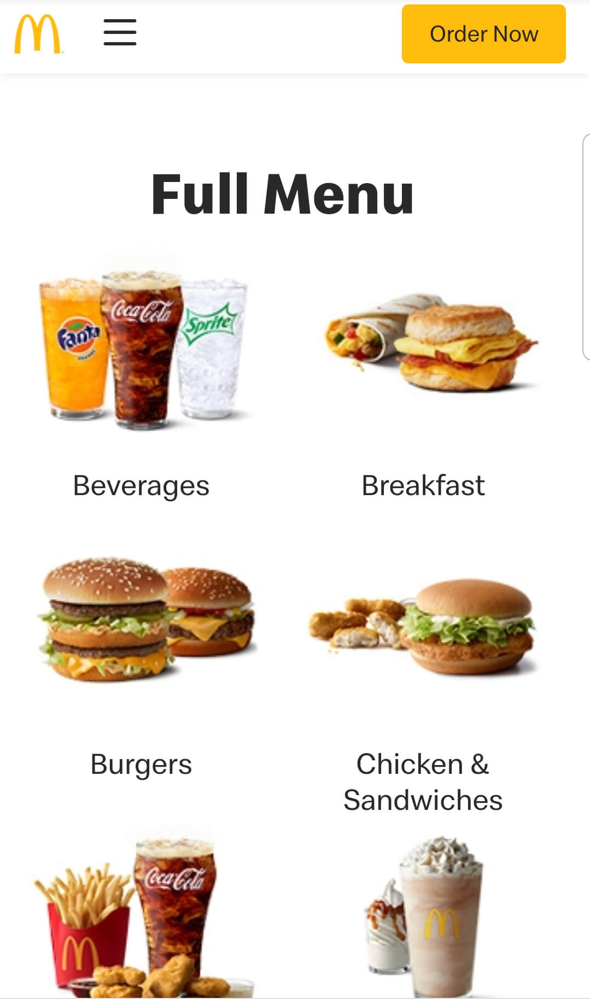
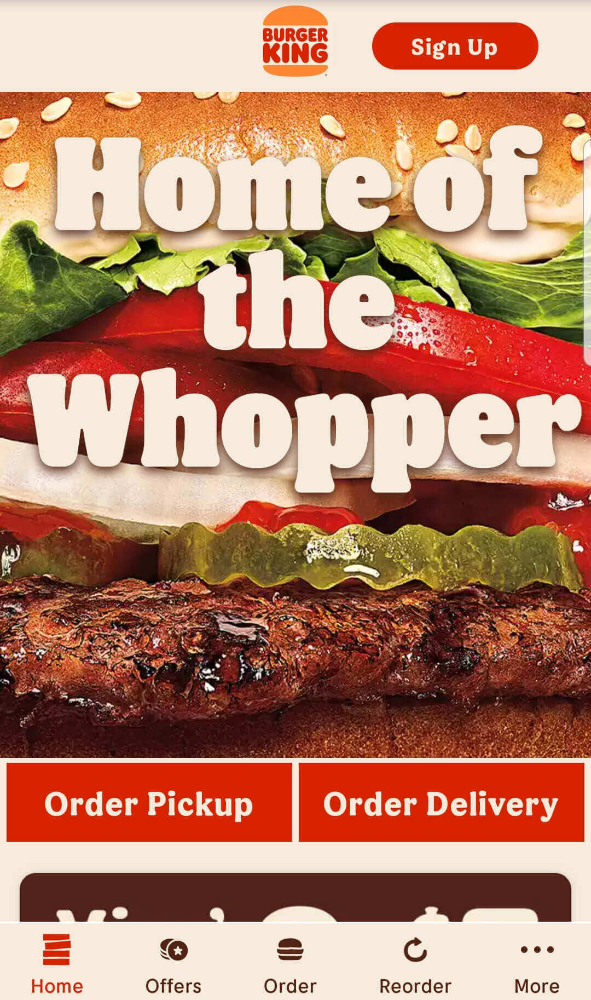

PARC: Alignment
McDonalds
mcdonalds.com This is an example of Alignment design. Each element is connected to give the website a clean balanced look and makes the website easier to understand quickly.
Visual Hierarchy
Burger King
bk.com Burger King is an example of the Visual Hierarchy design principle. The large image of the hamburger immediately draws customer's attention. Second, it shows the taste of hamburger "Home of the Whopper". Finally, call to the action(the red box of order pickup and order delivery).
White Space
iPhone 12 Pro
apple.comThe design of iPhone 12 Pro uses white space. The power of white space makes iPhone 12 Pro stand out. It is soothing to the eye. It promotes elegance and sophistication.